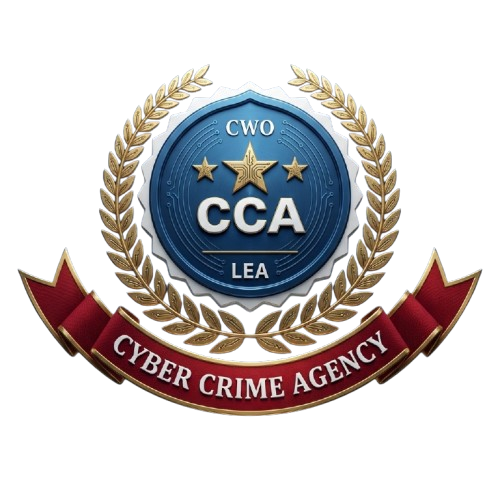
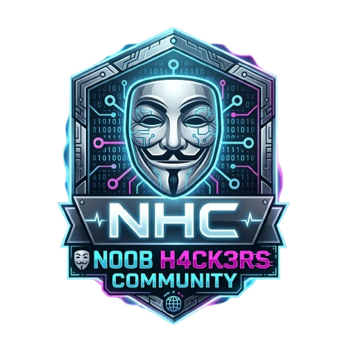
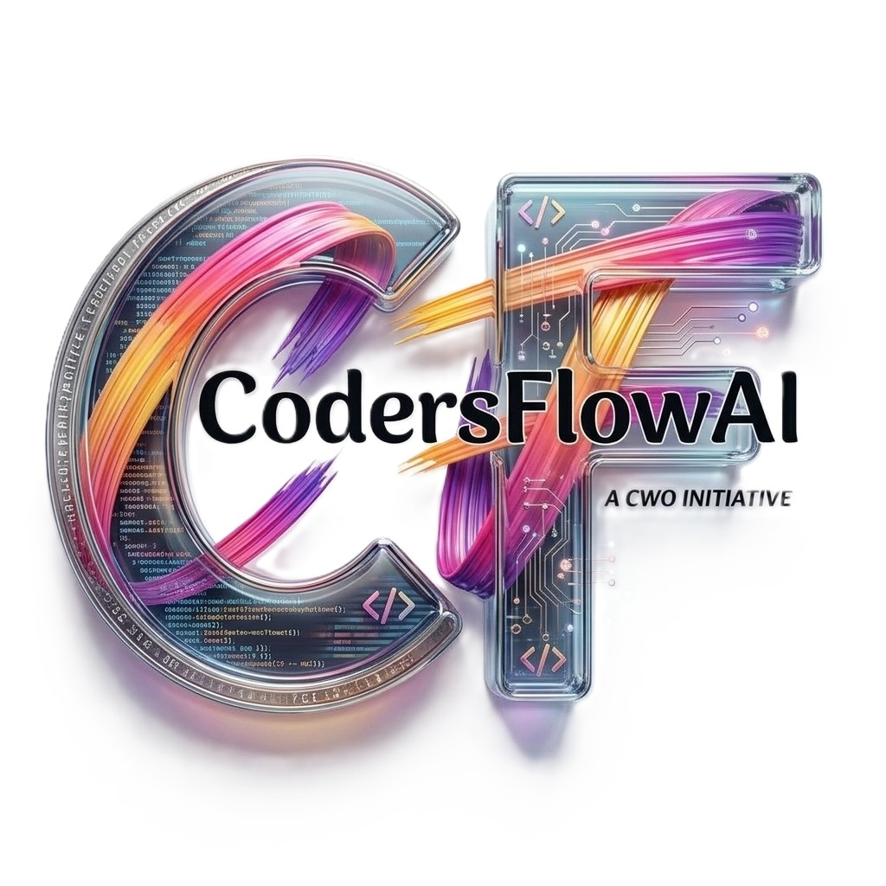
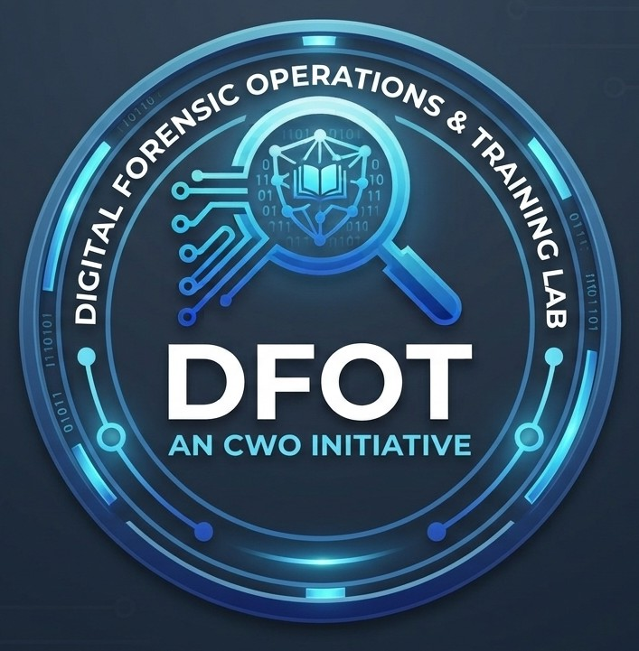

DIVISION_01

Cyber Crime Agency
Cyber Crime Division responsible for cyber related crime mitigation.
Division profile & courses ↗Find the team, learning catalogue, and project areas that fit your interests. Course outlines are informational and may be updated as programmes are confirmed.

Cyber Crime Division responsible for cyber related crime mitigation.
Division profile & courses ↗Cyber Awareness Division deals with cyber education and awareness.
Division profile & courses ↗It is a Cyber Security Forum deals with Conferences and Hackathon.
Division profile & courses ↗
An infosec community dealing with ethical hacking, bug hunting, cyber pentest and hacking education.
Division profile & courses ↗
An AI and product development division for AI products, software development and related innovation.
Division profile & courses ↗
Responsible for forensics-related education courses, training, and forensic services.
Division profile & courses ↗